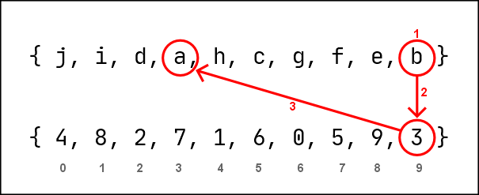
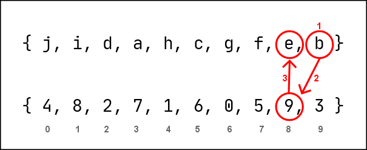
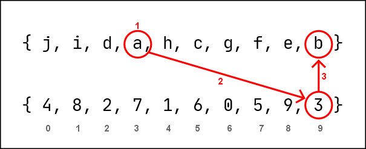
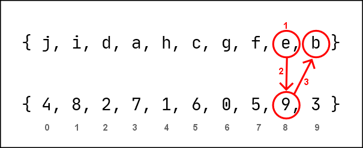

1. SAS-ROS Cipher
by: saaiqSAS
Last Updated: 12/6/2024
SAS-ROS Cipher (Saaiq Abdulla Saeed's Random Object Substitution Cipher) can be defined as a method of randomly substituting
a data object to another object within a fixed set of objects by refering to two types of randomly generated
keys: the Dynamic Key (Object Key) and the Static Key (Index Key), which when combined, represent a substitution table.
This cipher is the core of the SAS-RCS/RBS Encryption.
The ROS Cipher was originally developed by Saaiq Abdulla Saeed (saaiqSAS) as the core of the depreciated SAS-STE (SAS - Secure Text Encryption)
algorithm [project Github] - a weak ASCII substitution encryption,
also the first encryption by saaiqSAS. The key names 'Dynamic Key' for Object Key and 'Static Key' for Index Key were derived
from the SAS-STE project.
Dynamic Keys are a set/array of randomly shuffled objects, where objects can be of any type (ie. characters, bytes, frequency, voltage, etc).
Static Keys are a set/array of randomly shuffled indexes equal to length of Dynamic Key, which are used to link objects of the
Dynamic Key while performing substitution.
There are two methods to perform the ROS Cipher, which are inverses of each other. Thus, if one method is used for encryption,
the other can be used for decryption, and vice versa.
ROS method 1 (m1)
Dynamic Key: { j, i, d, a, h, c, g, f, e, b }
Static Key : { 4, 8, 2, 7, 1, 6, 0, 5, 9, 3 }
Data: b
1. Locate the index of 'b' in Dynamic Key - [9]
2. Retrieve the integer in the [9] index of the Static Key - 3
3. Identify the character in the [3] index of Dynamic Key - 'a'
4. Substitute 'b' to 'a'
out: a

Fig.1.1
ROS method 2 (m2)
Dynamic Key: { j, i, d, a, h, c, g, f, e, b }
Static Key : { 4, 8, 2, 7, 1, 6, 0, 5, 9, 3 }
Data: b
1. Locate the index of 'b' in Dynamic Key - [9]
2. Locate the index of '9' in Static Key - [8]
3. Identify the character in the [8] index of Dynamic Key - 'e'
4. Substitute 'b' to 'e'
out: e

Fig.1.2
Decrypting m1 output via m2
Dynamic Key: { j, i, d, a, h, c, g, f, e, b }
Static Key : { 4, 8, 2, 7, 1, 6, 0, 5, 9, 3 }
m1 Encrypted Data: a
1. Locate the index of 'a' in Dynamic Key - [3]
2. Locate the index of '3' in Static Key - [9]
3. Identify the character in the [9] index of Dynamic Key - 'b'
4. Substitute 'b' to 'e'
out: b

Fig.1.3
Decrypting m2 output via m1
Dynamic Key: { j, i, d, a, h, c, g, f, e, b }
Static Key : { 4, 8, 2, 7, 1, 6, 0, 5, 9, 3 }
m2 Encrypted Data: e
1. Locate the index of 'e' in Dynamic Key - [8]
2. Retrieve the integer in the [8] index of the Static Key - 9
3. Identify the character in the [9] index of Dynamic Key - 'b'
4. Substitute 'b' to 'a'
out: b

Fig.1.4